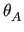

Next: The NS MMQ 3-site Up: The numeric MMQ CPMG Previous: The NS MMQ 2-site Contents Index
This is the numerical model for 3-site exchange for proton-heteronuclear SQ, ZQ, DQ and MQ CPMG data, as derived in (Korzhnev et al., 2004b,2005a,2004a). As this model is linear, the assumption that kAC = kCA = 0 has been made. To simplify the optimisation space for the model, the assumption R2A0 = R2B0 = R2C0 = R20 has also been made.
The basic evolution matrices for single, zero and double quantum CPMG-type data for this model are
| A± = ea±⋅τCPMG, | (11.66) |
where
| a± | =  |
|
-  . . |
(11.67) |
The formulae for multiple quantum CPMG-type data are the same as for the `NS MMQ 2-site' model except for the R2eff calculation and the mj matrices. The rate is calculated as
R2eff = - log |
(11.68) |
The mj matrices are
 |
For the model, the assumption R2A0 = R2B0 = R2C0 = R20 is made.
More information about the NS MMQ 3-site linear model is available from:
The relax user manual (PDF), created 2015-02-04.